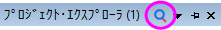
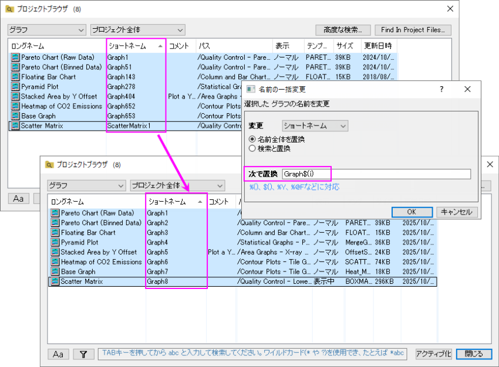
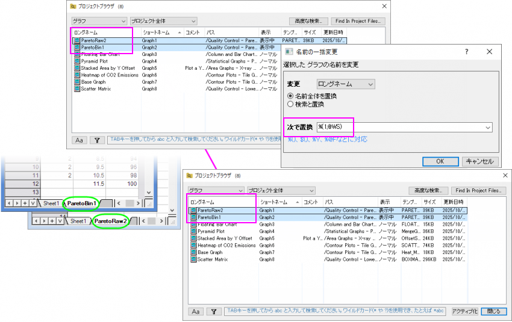
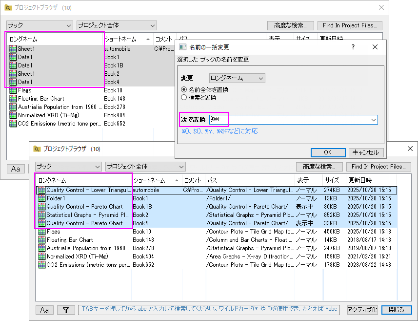

列ヘッダ
- 従属：ウィンドウが独立しているかどうかを表示します。
- 表示：ウィンドウ/シートを通常の表示または最小化または非表示の状態で表示します。
Originはワークブック、グラフ、シートをナビゲートするためのプロジェクトブラウザ機能をサポートしています。また、メタデータやデータセル、グラフオブジェクトを含むプロジェクトにある文字列や数値データを検索できます。
プロジェクトブラウザダイアログを開くには
または

をクリックするまたは
または
または
| Note：このダイアログの空のスペースをダブルクリックして閉じます。 |
ドロップダウンを使用して、プロジェクトブラウザにリストするウィンドウ/シート/列/フォルダのウィンドウ/タイプを指定します。
ドロップダウンを使用して、ウィンドウ/列/フォルダの範囲をフィルタリングします。
| プロジェクト全体 | プロジェクト全体のウィンドウ/列/フォルダを一覧表示します。 |
|---|---|
| フォルダとサブフォルダ | アクティブなフォルダとそのサブフォルダ内のウィンドウ/列/フォルダを一覧表示します。 |
| フォルダ | アクティブなフォルダ内のウィンドウ/列/フォルダのみを一覧表示します。 |
高度な検索 ボタンをクリックして、検索 ダイアログを開きます。
プロジェクトファイル内を検索ボタンをクリックすると、プロジェクトファイル内で検索ダイアログを開けます。
コンテキストメニューを表示するには、このリストの列ヘッダ領域を右クリックします。
列ヘッダ
|
選択したウィンドウ/列を非表示にした場合に表示します。
選択したウィンドウ/列を非表示にします。
選択したウィンドウ/シート/列/フォルダを削除します。
ウィンドウ/シート列のロングネームを変更します。
名前の変更ダイアログを開きます。ウィンドウ/列の場合、選択したウィンドウのショートネーム、ロングネーム、コメントを編集できます。
シートの場合、名前、ラベル、メモ、タブの色を編集できます。
フォルダの場合、フォルダプロパティダイアログを開きます。
複数の行を選択して右クリックし、名前の一括変更を選択してダイアログを開きます。このダイアログで、複数のウィンドウ/シート/列/フォルダの名前を変更できます。
| 変更 | ウィンドウの場合は、ロングネームまたはショートネームを変更することを選択できます。
列の場合は、シート名またはシートラベルを変更するように選択できます。 |
|---|---|
| 名前全体を置換 | ウィンドウ/シート/列/フォルダの名前全体を置換します。 |
| 検索と置換 | ウィンドウ/シート/列/フォルダの名前で指定された文字列を見つけて、指定された文字列を置き換えることができます。 |
| 検索 | 検索と置換オプションがチェックされている場合、この編集ボックスがダイアログに表示されます。検索したい文字列を指定します。
Note: ワイルドカード（*?）を使用することができます。
|
| 大文字小文字の区別 | 検索で大文字と小文字を区別するかどうかを指定します。
例えばABCを検索するときにこの設定が有効な場合には、ABCは検索しますがabcは検索しません。 |
| 置換 |
Note: %(), $(), %Y, %@F などがサポートされています。 |
メタデータを使用した名前の一括変更の例：



このダイアログで列を表示するよう選択した場合、このダイアログで行を右クリックし、右クリックして式の変更を選択すると、選択した列の式を変更できます。
| 式全体を置換 | 式全体を、置換の編集ボックスに入力された新しい式で置換します。 |
|---|---|
| 検索と置換 | 式で指定された部分を検索し、置換の編集ボックスに入力した新しいスクリプトを使用して置換します。 |
| 検索 | 検索する式に指定した部分を入力します。 |
| 置換 | 式または式の中の指定された部分を置換する新しい式（スクリプト）を入力します。 |
ワークシートの列の再計算をなしに設定します（緑色の鍵を除去します）すると再計算モードになしと表示されます。
このダイアログでは、複数の行（ワークシート内の複数の列）を選択して、それらの操作を一緒に除去することができます。
行をダブルクリックしてウィンドウ/シート/列/フォルダをアクティブにすると、このプロジェクトブラウザダイアログが開いたままになります。
リスト内の埋め込みウィンドウを非表示にします。
プロジェクトブラウザでシートを表示する場合、このオプションにチェックを付けて分析結果シートを非表示にします。
プロジェクトブラウザにブック/シートを表示し、列ヘッダーにデータソースを表示する場合、このオプションにチェックを入れると、データソースにソースパスが表示されます。
Ctrl + Aキーを使用して、リスト内のすべての行を選択できます。このダイアログでは、Ctrl+ZとCtrl+Yホットキーによって、操作を元に戻したりやり直したりすることができます。 |
リスト内のウィンドウ（ブック/グラフ/ノート）/シート/列を選択し、F2キーを押すと、インプレース編集状態で入力して名前を編集できます。
ロングネームとショートネームの列が表示されている場合は、ロングネームを編集するだけです。ショートネームの列のみが表示されている場合は、ショートネームを編集できます。
ボックスに文字列または数値データを入力して、プロジェクトブラウザにリストされているウィンドウ/シート/列/フォルダを検索します。 名前だけでなく、それらのメタデータを検索できます。
このボタンを使用して、検索で大文字と小文字を区別するかどうかを指定します。
検索する列(メタデータ)を指定します。
検索したい文字列や数値データを指定します。ワイルドカード（* および ?）がサポートされています。たとえば、末尾を「*abc」というように検索できます。